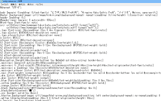

CSSのMinify化で容量を圧縮
CSSをMinify（ミニファイ）して容量を圧縮することでサイトの表示を高速化することができます。画像の容量圧縮と同様、CSSについても圧縮しておくとよいでしょう。
CSSを圧縮する際、不必要な文字を削除することでファイルの容量を削減しますが、一般的にはサイトの表示には影響しない半角スペースや改行を削除します。あるいはショートハンドなどで効率的にCSSを記載し、重複している記述などを削除することでも文字数を減らすことができます。
- 半角スペースや改行の削除 → 手軽で簡単、効果が大きい。元に戻しやすい。
- CSSを効率的に書いて文字数を節約 → 不可逆的で元に戻すのが困難。
例えば、このページのCSSは以下のようになっていますが、圧縮前の状態では「9.57 KB (9,805 バイト)」となっています。
■圧縮前（9,805 バイト）

ここから、メモ帳の置換機能などで半角スペースや改行を削除すると「8.83 KB (9,042 バイト)」になりました。
■圧縮後：半角スペースと改行を削除した場合（9,805 バイト → 9,042 バイト）
あくまでこのページのCSSの例にはなりますが、単純に半角スペースや改行を削除するだけでも「約8％」の圧縮率となりました。さらに、冗長な記述をショートハンドなどで効率的にCSSを記載した上で同じ処理をした場合は「約12％」の圧縮率となりました。
PCサイトではそれほどこだわる必要はありませんが、通信環境がプアなモバイル端末に最適化する場合はできるだけ容量を削減しておくことをおすすめします。
ちなみに、Minify化した後、CSSのメンテナンスをする際には元に戻す必要があるため、必ず圧縮する前にバックアップを保存しておくことをおすすめします。
メモ帳で半角スペースと改行を削除する方法
CSSのMinify化で削除する半角スペースについては、おおむね以下の箇所になります。

CSSは、概ねどの行もセレクタ {プロパティ: 値;}の形式で書かれていますが、「最初の波括弧の直前」と「コロンの直後」に半角スペースが入っていることが多いです。この半角スペースについてはあってもなくてもサイトの表示には影響ないですが、それ以外の「値;」の箇所などで記載されている半角スペースを削除するとエラーになります。
例えば、#text {padding: 10px 5px 3px 7px;}などとあった場合、以下のように全ての半角スペースを削除するとエラーになります。
#text{padding:10px5px3px7px;}
そのため、上記の赤い四角の箇所のみを削除します。
#text {padding: 10px 5px 3px 7px;}
この場合、メモ帳などにCSSをコピペしてから以下のように一括で置換するとよいでしょう。
「 {」→「{」
「: 」→「:」

そのほか、font-familyなどについては、シングルクォートやダブルクォートで囲まれている箇所以外の半角スペースを削除します。
font-family: "メイリオ", "Hiragino Kaku Gothic Pro", Meiryo, "ヒラギノ角ゴ Pro W3", sans-serif;
次に、改行の削除についてですが、「}」を次の行の先端まで選択して反転させ、カーソルが次の行の先頭で点滅している状態で置換のボタンを押します。その後、キー入力で「}」を入力してから置換すると改行が削除されます。
細かいところを調整すれば、ミニファイCSSの出来上がりです。
出来上がりましたら、エラーがないかをCSSのValidatorでチェックされるとよいでしょう。
→ W3C CSS検証サービス
■Minify CSSを元に戻す場合
CSSを元に戻す場合、編集中の場合は「編集」→「元に戻す」の箇所から戻せます。
戻せない場合、上記の検証サービスでチェックした際、検証結果が整形された状態で表示されるため、こちらをコピペすればよいかと思います。

font-familyなどで日本語の箇所は文字化けしているかもしれませんが、そのあたりは直接入力すればよいと思います。
ちなみに、Dreamweaverなどの作成ソフトを使用している場合、「ソースフォーマットの適用」の箇所などから簡単に元に戻すことができます。
CSSを効率的に書いて文字数を削減
そのほか、ショートハンドで効率的にCSSを書くことでも文字数を削減することができます。
例えば、「padding: 4px 4px 4px 4px;」などの場合、ショートハンドの「padding: 4px;」でまとめて書くことができます。
一般的なスタイルシートの書き方の基本については、こちらのページをご参照ください。
→ スタイルシートの書き方のポイント
あるいは、以下のように「text-decoration: none;」などで重複している文字列があったとします。
.logo a{color: #343434;text-decoration: none;}
.logo a:hover{color: #06c;text-decoration: none;}
a:hover {color: #06c;text-decoration:none;}
このような書き方は冗長になるため、これらをカンマでつなげて、共通する項目については以下のようにまとめて記載すると文字数を削減することができます。
.logo a,.logo a:hover,a:hover {text-decoration: none;}
.logo a{color: #343434;}
.logo a:hover,a:hover {color: #06c;}
主に「text-decoration: none;」や「font-weight: bold;」、「text-align: center;」や「padding:0;」、「margin:0;」など、何度も繰り返し出てくる文字列については、一か所にまとめて記載しておくとよいでしょう。
例えば、単純に{text-decoration: none;}などと記載したのち、該当する箇所のセレクターを左側にカンマ「,」でつなげて書いていくだけです。上記の例の場合、「.logo a」、「.logo a:hover」、「a:hover」などとカンマでつなげていき、一か所にまとめて記入していきます。
適用される順序が逆にならないように、ソースの上の部分から先に記述していくように注意しましょう。また、レスポンシブウェブデザインのデバイス幅で切り分けをしている場合、PC用とスマホ用の記述については合算しないように注意しましょう。
このようにCSSを効率的に書いて文字数を削減する場合、上記の半角スペースや改行の削除と比べると元に戻すのが大変ですし、記載する順序を間違えるとサイトの表示が崩れることもあります。
また、労力が大きいわりに圧縮効果はいまいちなため、個人的には半角スペースや改行の削除だけでも対応しておけば、あえてそこまでする必要はないかと思います。
加えて、HTMLファイルについても改行などを削除してMinify化できますが、CSSとは違いページ数が多いため、CSSだけでも対応しておけばよいかと思います。